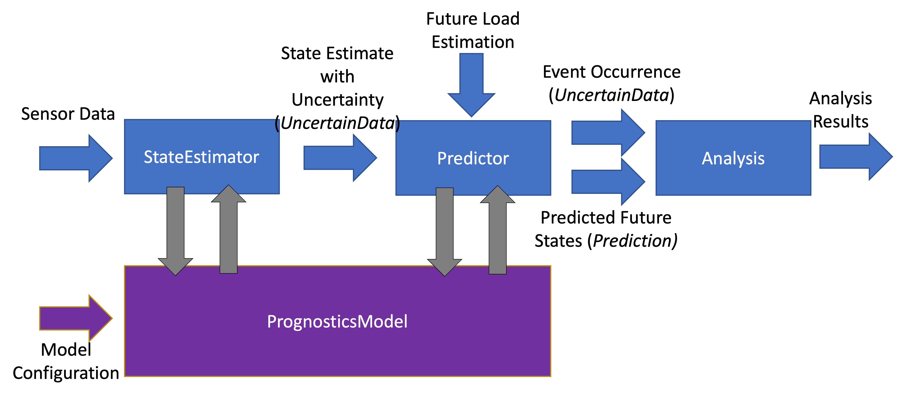

prog_algs Guide
Contents
prog_algs Guide#
The Prognostic Algorithms Package is a python framework for prognostics (computation of remaining useful life or future states) of engineering systems. The package provides an extendable set of algorithms for state estimation and prediction, including uncertainty propagation. The package also include metrics, visualization, and analysis tools needed to measure the prognostic performance. The algorithms use prognostic models (from prog_models) to perform estimation and prediction functions. The package enables the rapid development of prognostics solutions for given models of components and systems. Different algorithms can be easily swapped to do comparative studies and evaluations of different algorithms to select the best for the application at hand.
Installing prog_algs#
The latest stable release of prog_algs is hosted on PyPi. For most users (unless you want to contribute to the development of prog_algs), this version will be adequate. To install from the command line, use the following command:
$ pip install prog_algs
Users who would like to contribute to prog_algs or would like to use pre-release features can do so using the prog_algs GitHub repo. This isn’t recommended for most users as this version may be unstable. To do this, use the following commands:
$ git clone https://github.com/nasa/prog_algs
$ cd prog_algs
$ git checkout dev
$ pip install -e .
Summary#
The structure of the packages is illustrated below:
Prognostics is performed using State Estimators and Predictors. State Estimators are resposible for estimating the current state of the modeled system using sensor data and a prognostics model (see: prog_models package). The state estimator then produces an estimate of the system state with uncertainty in the form of an uncertain data object. This state estimate is used by the predictor to predict when events will occur (Time of Event, ToE - returned as an uncertain data object), and future system states (returned as a Prediction object).
Data Structures#
- A few custom data structures are available for storing and manipulating prognostics data of various forms. These structures are listed below and desribed on their respective pages:
prog_models.sim_result.SimResult: The result of a single simulation (without uncertainty). Can be used to store inputs, outputs, states, event_states, observables, etc. Is returned by the model.simulate_to* methods.prog_algs.uncertain_data.UncertainData: Used throughout the package to represent data with uncertainty. There are a variety of subclasses of UncertainData to represent data with uncertainty in different forms (e.g.,prog_algs.uncertain_data.ScalarData,prog_algs.uncertain_data.MultivariateNormalDist,prog_algs.uncertain_data.UnweightedSamples). Notably, this is used to represent the output of a StateEstimator’s estimate method, individual snapshots of a prediction, and the time of event estimate from a predictor’s predict method.prog_algs.predictors.Prediction: Prediction of future values (with uncertainty) of some variable (e.g., input, state, output, event state, etc.). The predict method of predictors return this.prog_algs.predictors.ToEPredictionProfile: The time of prediction estimates from multiple predictions. This data structure can be treated as a dictionary of time of prediction to toe prediction.
State Estimation#
State estimation is the process of estimating the internal model state (x) using input (i.e., loading), output (i.e., sensor data), and system parameters. State estimation is necessary for cases where model state isn’t directly measurable (i.e., hidden state) or where there is sensor noise. Most state estimators estimate the state with some representation of uncertainty.
The foundation of state estimators is the estimate method. The estimate method is called with a time, inputs, and outputs. Each time estimate is called, the internal state estimate is updated.
>>> estimator.update(time, inputs, outputs)
The internal state is stored in the estimators x property as a UncertainData subclass (see UncertainData). State is accessed like so x_est = estimator.x.
Included State Estimators
ProgPy includes a number of state estimators in the prog_algs.state_estimators package. The most commonly used of these are highlighted below. See State Estimators for a full list of supported state estimators.
Unscented Kalman Filter (UKF): A type of kalman filter for non-linear models where the state distribution is represented by a set of sigma points, calculated by an unscented tranform. Sigma points are propogated forward and then compared with the measurement to update the distribution. The resulting state is represented by a
prog_algs.uncertain_data.MultivariateNormalDist. By it’s nature, UKFs are much faster than Particle Filters, but they fit the data to a normal distribution, resulting in some loss of information.Particle Filter (PF): A sample-based state estimation algorithm, where the distribution of likely states is represented by a set of unweighted samples. These samples are propagated forward and then weighted according to the likelihood of the measurement (given those samples) to update the distribution. The resulting state is represented by a
prog_algs.uncertain_data.UnweightedSamples. By its nature, PF is more accurate than a UKF, but much slower. Full accuracy of PF can be adjusted by increasing or decreasing the number of samplesKalman Filter (KF): A Simple efficient Kalman Filter for linear systems where state is represented by a mean and covariance matrix. The resulting state is represented by a
prog_algs.uncertain_data.MultivariateNormalDist. Only works with Prognostic Models inheriting fromprog_models.LinearModel.
UKF Details
- class prog_algs.state_estimators.UnscentedKalmanFilter(model, x0, **kwargs)#
An Unscented Kalman Filter (UKF) for state estimation
This class defines logic for performing an unscented kalman filter with a Prognostics Model (see Prognostics Model Package). This filter uses measurement data with noise to generate a state estimate and covariance matrix.
The supported configuration parameters (keyword arguments) for UKF construction are described below:
- Parameters
model (PrognosticsModel) – A prognostics model to be used in state estimation See: Prognostics Model Package
x0 (UncertainData, model.StateContainer, or dict) –
Initial (starting) state, with keys defined by model.states
e.g., x = ScalarData({‘abc’: 332.1, ‘def’: 221.003}) given states = [‘abc’, ‘def’]
- Keyword Arguments
PF Details
- class prog_algs.state_estimators.ParticleFilter(model, x0, **kwargs)#
Estimates state using a Particle Filter (PF) algorithm.
This class defines logic for a PF using a Prognostics Model (see Prognostics Model Package). This filter uses measurement data with noise to estimate the state of the system using a particles. At each step, particles are predicted forward (with noise). Particles are resampled with replacement from the existing particles according to how well the particles match the observed measurements.
The supported configuration parameters (keyword arguments) for UKF construction are described below:
- Parameters
model (PrognosticsModel) – A prognostics model to be used in state estimation See: Prognostics Model Package
x0 (UncertainData, model.StateContainer, or dict) –
Initial (starting) state, with keys defined by model.states
e.g., x = ScalarData({‘abc’: 332.1, ‘def’: 221.003}) given states = [‘abc’, ‘def’]
- Keyword Arguments
KF Details
- class prog_algs.state_estimators.ParticleFilter(model, x0, **kwargs)#
Estimates state using a Particle Filter (PF) algorithm.
This class defines logic for a PF using a Prognostics Model (see Prognostics Model Package). This filter uses measurement data with noise to estimate the state of the system using a particles. At each step, particles are predicted forward (with noise). Particles are resampled with replacement from the existing particles according to how well the particles match the observed measurements.
The supported configuration parameters (keyword arguments) for UKF construction are described below:
- Parameters
model (PrognosticsModel) – A prognostics model to be used in state estimation See: Prognostics Model Package
x0 (UncertainData, model.StateContainer, or dict) –
Initial (starting) state, with keys defined by model.states
e.g., x = ScalarData({‘abc’: 332.1, ‘def’: 221.003}) given states = [‘abc’, ‘def’]
- Keyword Arguments
Example
Here’s an example of its use. In this example we use the unscented kalman filter state estimator and the ThrownObject model.
>>> from prog_models.models import ThrownObject
>>> from prog_algs.state_estimators import UnscentedKalmanFilter
>>>
>>> m = ThrownObject()
>>> initial_state = m.initialize()
>>> filt = UnscentedKalmanFilter(m, initial_state)
>>>
>>> load = {} # No load for ThrownObject
>>> new_data = {'x': 1.8} # Observed state
>>> print('Prior: ', filt.x.mean)
>>> filt.estimate(0.1, load, new_data)
>>> print('Posterior: ', filt.x.mean)
Extending#
New state estimator are created by extending the prog_algs.state_estimators.StateEstimator class.
See examples.new_state_estimator_example for an example of this approach.
Example#
examples.new_state_estimator_exampleAn example illustrating the creation of a new state estimator.
In this example a basic state estimator is constructed by subclassing the StateEstimator class. This StateEstimator is then demonstrated with a ThrownObject model
Prediction#
Prediction is the process by which future states are estimated, given the initial state (e.g., from State Estimation), a model, and an estimate of future load. An algorithm used to do this is called a predictor. Prediction is often computationally expensive, especially for sample-based approaches with strict precision requirements (which therefore require large number of samples).
With this framework, there are a number of results that can be predicted. The exact prediction results are selected based on the needs of the end-user. The most common prediction results are Time of Event (ToE) and Time to Event (TtE). Time of Event at a specific prediction time (\(t_P\)) is defined as the time when the event is expected to occur (with uncertainty), or equivalently, the time where the event state for that event is zero. Time to Event is defined as the time to ToE (\(TtE = ToE - t_P\)). In prognostics, ToE and TtE are often referred to as End of Life (EOL) and Remaining Useful Life (RUL), respectively.
Beyond these, results of prediction can also include event state, outputs, performance metrics, and system states at different future times, including at ToE. For approaches that predict ToE with uncertainty, some users consider Probability of Success (PoS) or Probability of Failure (PoF). PoF is defined as the percentage of predictions that result in failure before the prognostics horizon (\(PoS \triangleq 1 - PoF\)).
A predictors predict method is used to perform prediction, generally defined below:
result = predictor.predict(x0, future_loading, **config)
Where x0 is the initial state as an UncertainData object (often the output of state estimation), future_loading is a function defining future loading as a function of state and time, and config is a dictionary of any additional configuration parameters, specific to the predictor being used. See Predictors for options available for each predictor
The result of the predict method is a named tuple with the following members:
times: array of times for each savepoint such that times[i] corresponds to inputs.snapshot(i)
inputs:
prog_algs.predictors.Predictionobject containing inputs used to perform prediction such that inputs.snapshot(i) corresponds to times[i]outputs:
prog_algs.predictors.Predictionobject containing predicted outputs at each savepoint such that outputs.snapshot(i) corresponds to times[i]event_states:
prog_algs.predictors.Predictionobject containing predicted event states at each savepoint such that event_states.snapshot(i) corresponds to times[i]time_of_event:
prog_algs.uncertain_data.UncertainDataobject containing the predicted Time of Event (ToE) for each event. Additionally, final state at time of event is saved at time_of_event.final_state ->prog_algs.uncertain_data.UncertainDatafor each event
The stepsize and times at which results are saved can be defined like in a simulation. See Simulation.
Included Predictors
ProgPy includes a number of predictors in the prog_algs.predictors package. The most commonly used of these are highlighted below. See Predictors for a full list of supported predictors.
Unscented Transform (UT): A type of predictor for non-linear models where the state distribution is represented by a set of sigma points, calculated by an unscented tranform. Sigma points are propogated forward with time until the pass the threshold. The times at which each sigma point passes the threshold are converted to a distribution of time of event. The predicted future states and time of event are represented by a
prog_algs.uncertain_data.MultivariateNormalDist. By it’s nature, UTs are much faster than MCs, but they fit the data to a normal distribution, resulting in some loss of information.Monte Carlo (MC): A sample-based prediction algorithm, where the distribution of likely states is represented by a set of unweighted samples. These samples are propagated forward with time. By its nature, MC is more accurate than a PF, but much slower. The predicted future states and time of event are represented by a
prog_algs.uncertain_data.UnweightedSamples. Full accuracy of MC can be adjusted by increasing or decreasing the number of samples
UT Details
- class prog_algs.predictors.UnscentedTransformPredictor(model, **kwargs)#
Class for performing model-based prediction using an unscented transform.
This class defines logic for performing model-based state prediction using sigma points and an unscented transform. The Unscented Transform Predictor propagates the sigma-points in the state-space in time domain until the event threshold is met. The step at which the i-th sigma point reaches the threshold is the step at which the i-th sigma point will be placed along the time dimension. By repeating the procedure for all sigma-points, we obtain the sigma-points defining the distribution of the time of event (ToE); for example, the End Of Life (EOL) event. The provided future loading equation is used to compute the inputs to the system at any given time point.
The following configuration parameters are supported (as kwargs in constructor or as parameters in predict method):
- alpha, beta, kappa: float
UKF Scaling parameters. See: https://en.wikipedia.org/wiki/Kalman_filter#Unscented_Kalman_filter
- Q: np.array
Process noise covariance matrix [nStates x nStates]
- t0float
Initial time at which prediction begins, e.g., 0
- dtfloat
Simulation step size (s), e.g., 0.1
- eventslist[str]
Events to predict (subset of model.events) e.g., [‘event1’, ‘event2’]
- horizonfloat
Prediction horizon (s)
- save_freqfloat
Frequency at which results are saved (s)
- save_ptslist[float]
Any additional savepoints (s) e.g., [10.1, 22.5]
Note
The resulting sigma-points along the time dimension are used to compute mean and covariance of the event time (ToE), under the hypothesis that the ToE distribution would also be well represented by a Gaussian. This is a strong assumption that likely cannot be satisfied for real systems with strong non-linear state propagation or nonlinear ToE curves. Therefore, the user should be cautious and verify that modeling the event time using a Gaussian distribution is satisfactory.
MC Details
- class prog_algs.predictors.MonteCarlo(model, **kwargs)#
Class for performing a monte-carlo model-based prediction.
A Predictor using the monte carlo algorithm. The provided initial states are simulated until either a specified time horizon is met, or the threshold for all simulated events is reached for all samples. A provided future loading equation is used to compute the inputs to the system at any given time point.
The following configuration parameters are supported (as kwargs in constructor or as parameters in predict method):
- t0float
Initial time at which prediction begins, e.g., 0
- dtfloat
Simulation step size (s), e.g., 0.1
- eventslist[str]
Events to predict (subset of model.events) e.g., [‘event1’, ‘event2’]
- horizonfloat
Prediction horizon (s)
- n_samplesint
Number of samples to use. If not specified, a default value is used. If state is type UnweightedSamples and n_samples is not provided, the provided unweighted samples will be used directly.
- save_freqfloat
Frequency at which results are saved (s)
- save_ptslist[float]
Any additional savepoints (s) e.g., [10.1, 22.5]
- prog_algs.predictors.MonteCarloPredictor#
Extending#
New predictor are created by extending the prog_algs.predictors.Predictor class.
Analyzing Results#
State Estimation#
The results of the state estimation are stored in an object of type prog_algs.uncertain_data.UncertainData. This class contains a number of methods for analyzing a state estimate. This includes methods for obtaining statistics about the distribution, including the following:
mean: The mean value of the state estimate distribution.
median: The median value of the state estimate distribution.
cov: Covariance matrix (in same order as keys in mean)
metrics: A collection of various metrics about the distribution, inlcuding the ones above and percentiles of the state estimate
describe: Similar to metrics, but in human readable format
percentage_in_bounds: The percentage of the state estimate that is within defined bounds.
relative_accuracy: Relative accuracy is how close the mean of the distribution is to the ground truth, on relative terms
There are also a number of figures available to describe a state estimate, described below
Scatter Plot
A scatter plot is one of the best ways to visualize a distribution. The scatter plot will combine all of the states into a single plot, so you can see the correlation between different states as well as the distribution. This figure is made using the state.plot_scatter() method. An example is illustrated below.

Multiple states can be overlayed on the same plot. This is typically done to show how a state evolves with time. The following example shows the distribution of states at different future times:
>>> results = predictor.predict(...)
>>> fig = results.states.snapshot(0).plot_scatter(label = "t={} s".format(int(results.times[0]))) # 0
quarter_index = int(len(results.times)/4)
>>> results.states.snapshot(quarter_index).plot_scatter(fig = fig, label = "t={} s".format(int(results.times[quarter_index]))) # 25%
>>> results.states.snapshot(quarter_index*2).plot_scatter(fig = fig, label = "t={} s".format(int(results.times[quarter_index*2]))) # 50%
>>> results.states.snapshot(quarter_index*3).plot_scatter(fig = fig, label = "t={} s".format(int(results.times[quarter_index*3]))) # 75%
>>> results.states.snapshot(-1).plot_scatter(fig = fig, label = "t={} s".format(int(results.times[-1]))) # 100%
Histogram
The simplest representation of a state estimate is a histogram. A histogram plot is genearted using the built in state.plot_hist() method. The result is one histogram for each value in the state estimate, describing the distribution, as illustrated below:

See prog_algs.uncertain_data.UncertainData documentation for more details.
Predicted Future States#
Predicted future states, inputs, outputs, and event states come in the form of a prog_algs.predictors.Prediction object. Predictions store distributions of predicted future values at multiple future times. Predictions contain a number of tools for analyzing the results, some of which are described below:
mean: Estimate the mean value at each time. The result is a list of dictionaries such that prediction.mean[i] corresponds to times[i]
Time of Event (ToE)#
Time of Event is also stored as an object of type prog_algs.uncertain_data.UncertainData, so the analysis functions described in State Estimation are also available for a ToE estimate. See State Estimation or prog_algs.uncertain_data.UncertainData documentation for details.
In addition to these standard UncertainData metrics, Probability of Success (PoS) is an important metric for prognostics. Probability of Success is the probability that a event will not occur before a defined time. For example, in aeronautics, PoS might be the probability that no failure will occur before end of mission.
Below is an example calculating probability of success:
>>> from prog_algs.metrics import prob_success
>>> ps = prob_success(some_distribution, end_of_mission)
ToE Prediction Profile#
A prog_algs.predictors.ToEPredictionProfile contains Time of Event (ToE) predictions performed at multiple points. ToEPredictionProfile is frequently used to evaluate the prognostic quality for a given prognostic solution. It contains a number of methods to help with this, including:
alpha_lambda: Whether the prediction falls within specified limits at particular times with respect to a performance measure 1 2
cumulate relitive accuracy: The sum of the relative accuracies of each prediction, given a ground truth
prognostic_horizon: The difference between a time \(t_i\), when the predictions meet specified performance criteria, and the time corresponding to the true Time of Event (ToE), for each event 1 2
A ToEPredictionProfile also contains a plot method (profile.plot(...)), which looks like this:

This chart shows the distribution of estimated RUL (y-axis) at different prediction times (x-axis) in red. The ground truth and an alpha bound around the ground truth is displayed in green.
Examples#
The best way to learn how to use prog_algs is through the tutorial. There are also a number of examples which show different aspects of the package, summarized and linked below:
examples.basic_exampleThis example performs a state estimation and prediction with uncertainty given a Prognostics Model.
- Method: An instance of the ThrownObject model in prog_models is created, and the prediction process is achieved in three steps:
State estimation of the current state is performed using a chosen state_estimator, and samples are drawn from this estimate
Prediction of future states (with uncertainty) and the times at which the event threshold will be reached
Metrics tools are used to further investigate the results of prediction
- Results:
Predicted future values (inputs, states, outputs, event_states) with uncertainty from prediction
Time event is predicted to occur (with uncertainty)
Various prediction metrics
Figures illustrating results
examples.basic_example_batteryThis example extends the “basic example” to perform a state estimation and prediction with uncertainty given a more complicated model. Models, state estimators, and predictors can be switched out. See documentation nasa.github.io/progpy for description of options
- Method: An instance of the BatteryCircuit model in prog_models is created, and the prediction process is achieved in three steps:
State estimation of the current state is performed using a chosen state_estimator, and samples are drawn from this estimate
Prediction of future states (with uncertainty) and the times at which the event threshold will be reached
Metrics tools are used to further investigate the results of prediction
- Results:
Predicted future values (inputs, states, outputs, event_states) with uncertainty from prediction
Time event is predicted to occur (with uncertainty)
Various prediction metrics
Figures illustrating results
examples.eol_eventThis example demonstrates a use case where someone wants to predict the first event (i.e., End Of Life (EOL)) of a system. Many system models have multiple events that can occur. In some prognostics applications, users are not interested in predicting a specific event, and are instead interested in when the first event occurs, regardless of the event. This example demonstrates how to predict the first event of a system.
Method: An instance of ThrownObject is used for this example. In this case it is trivial because the event ‘falling’ will always occur before ‘impact’, but for some other models that might not be true. The ThrownObject class is subclassed to add a new event ‘EOL’ which occurs if any other event occurs. The new model is then instantiated and used for prognostics like in basic_example. Prediction specifically specifies EOL as the event to be predicted.
Results:
Predicted future values (inputs, states, outputs, event_states) with uncertainty from prediction
Time the event ‘EOL’ is predicted to occur (with uncertainty)
Histogram of the event ‘EOL’
examples.new_state_estimator_exampleAn example illustrating the creation of a new state estimator.
In this example a basic state estimator is constructed by subclassing the StateEstimator class. This StateEstimator is then demonstrated with a ThrownObject model
examples.horizonThis example performs a state estimation and prediction with uncertainty given a Prognostics Model with a specific prediction horizon. This prediction horizon marks the end of the “time of interest” for the prediction. Often this represents the end of a mission or sufficiently in the future where the user is unconcerned with the events
- Method: An instance of the Thrown Object model in prog_models is created, and the prediction process is achieved in three steps:
State estimation of the current state is performed using a chosen state_estimator, and samples are drawn from this estimate
Prediction of future states (with uncertainty) and the times at which the event thresholds will be reached, within the prediction horizon. All events outside the horizon come back as None and are ignored in metrics
- Results:
Predicted future values (inputs, states, outputs, event_states) with uncertainty from prediction
Time event is predicted to occur (with uncertainty)
examples.kalman_filterThis example demonstrates use of the Kalman Filter State Estimator with a LinearModel.
First, a linear model is defined. Then the KF State estimator is used with fake data to estimate state.
examples.measurement_eqn_exampleThis example performs a state estimation with uncertainty given a Prognostics Model for a system in which not all output values are measured.
- Method: An instance of the BatteryCircuit model in prog_models is created. We assume that we are only measuring one of the output values, and we define a subclass to remove the other output value.
Estimation of the current state is performed at various time steps, using the defined state_estimator.
- Results:
Estimate of the current state given various times
Display of results, such as prior and posterior state estimate values and SOC
examples.playbackThis example performs state estimation and prediction using playback data.
- Method: An instance of the BatteryCircuit model in prog_models is created, the state estimation is set up by defining a state_estimator, and the prediction method is set up by defining a predictor.
Prediction is then performed using playback data. For each data point: 1) The necessary data is extracted (time, current load, output values) and corresponding values defined (t, i, and z) 2) The current state estimate is performed and samples are drawn from this distribution 3) Prediction performed to get future states (with uncertainty) and the times at which the event threshold will be reached
- Results:
Predicted future values (inputs, states, outputs, event_states) with uncertainty from prediction
Time event is predicted to occur (with uncertainty)
Various prediction metrics
Figures illustrating results
examples.predict_specific_eventIn this example we are using the UTPredictor to predict a specific event, in this case impact. This will then ignore the other events which are not of interest.
examples.particle_filter_battery_exampleIn this example the BatteryElectroChemEOD model is used with a particle filter to estimate the state of the battery
References#
- 1(1,2)
Kai Goebel, Matthew John Daigle, Abhinav Saxena, Indranil Roychoudhury, Shankar Sankararaman, and José R Celaya. Prognostics: The science of making predictions. 2017
- 2(1,2)
Abhinav Saxena, José Celaya, Sankalita Saha, Bhaskar Saha, and Kai Goebel. Saxena, A., Celaya, J. Metrics for Offline Evaluation of Prognostic Performance. International Journal of Prognostics and Health Management, 1(1), 20. 2010.
- 3(1,2)
Jamie Coble et al. Identifying Optimal Prognostic Parameters from Data: A Genetic Algorithms Approach. Annual Conference of the PHM Society. http://www.papers.phmsociety.org/index.php/phmconf/article/view/1404, 2021
- 4(1,2)
Marcia Baptista, et. al.. Relation between prognostics predictor evaluation metrics and local interpretability SHAP values. Aritifical Intelligence, Volume 306. https://www.sciencedirect.com/science/article/pii/S0004370222000078, 2022